pacman::p_load(igraph, tidygraph, ggraph, visNetwork, graphlayouts, ggforce, concaveman,
lubridate, clock,
tidyverse)Hands on Exercise 09: Modelling, Visualising and Analysing Network Data with R
Overview
In this exercise, we will:
- create graph object data.frames and manipulate them using appropriate functions of dplyr, lubridate, and tidygraph,
- build network graph visualisation using appropriate functions of ggraph,
- compute network geometrics using tidygraph,
- build advanced graph visualisation by incorporating the network geometrics, and
- build interactive network visualisation using visNetwork.
Loading Data
We will be using the following network data modelling and visualisation packages:
- igraph for the analysis of graphs or networks;
- tidygraph provides a tidy API for graph/network manipulation;
- ggraph is an extension of ggplot2 aimed at supporting relational data structures such as networks, graphs, and trees;
- visNetwork for network visualization;
- graphlayouts to implement several new layout algorithms to visualize networks not in igraph;
- lubridate part of tidyverse, makes it easier to do the things R does with date-times and possible to do the things R does not;
- clock for working with date-times;
And as usual:
- tidyverse, a family of R packages for data science processes.
In this exercise, we will be using two datasets from an oil exploration and extraction company:
- Edges data
GAStech-email_edge-v2.csv which consists of two weeks of 9063 emails correspondances between 54 employees.
- Nodes data
GAStech_email_node.csv which consist of the names, departments and titles of the 54 employees.
GAStech_nodes <- read_csv("data/GAStech_email_node.csv")
GAStech_edges <- read_csv("data/GAStech_email_edge-v2.csv")glimpse(GAStech_nodes)Rows: 54
Columns: 4
$ id <dbl> 1, 2, 3, 4, 5, 6, 7, 44, 45, 46, 8, 9, 10, 11, 12, 13, 14, …
$ label <chr> "Mat.Bramar", "Anda.Ribera", "Rachel.Pantanal", "Linda.Lago…
$ Department <chr> "Administration", "Administration", "Administration", "Admi…
$ Title <chr> "Assistant to CEO", "Assistant to CFO", "Assistant to CIO",…glimpse(GAStech_edges)Rows: 9,063
Columns: 8
$ source <dbl> 43, 43, 44, 44, 44, 44, 44, 44, 44, 44, 44, 44, 26, 26, 26…
$ target <dbl> 41, 40, 51, 52, 53, 45, 44, 46, 48, 49, 47, 54, 27, 28, 29…
$ SentDate <chr> "6/1/2014", "6/1/2014", "6/1/2014", "6/1/2014", "6/1/2014"…
$ SentTime <time> 08:39:00, 08:39:00, 08:58:00, 08:58:00, 08:58:00, 08:58:0…
$ Subject <chr> "GT-SeismicProcessorPro Bug Report", "GT-SeismicProcessorP…
$ MainSubject <chr> "Work related", "Work related", "Work related", "Work rela…
$ sourceLabel <chr> "Sven.Flecha", "Sven.Flecha", "Kanon.Herrero", "Kanon.Herr…
$ targetLabel <chr> "Isak.Baza", "Lucas.Alcazar", "Felix.Resumir", "Hideki.Coc…Warning
The output report of GAStech_edges above reveals that the SentDate is treated as “Character” data type instead of “Date” data type. This is an error! Before we continue, it is important for us to change the data type of SentDate field back to “Date”” data type.
Data Wrangling
Time Wrangling
We perform the change of SentDate to “Date” type below:
GAStech_edges <- GAStech_edges %>%
mutate(SendDate = dmy(SentDate)) %>%
mutate(Weekday = wday(SentDate,
label = TRUE,
abbr = FALSE))Things to learn from the code chunk above
- both dmy() and wday() are functions of the lubridate package.
- dmy() transforms the SentDate to “Date” data type.
- wday() returns the day of the week as an integer number by default, but as
label=TRUE, it is returned as an ordered factor. The argumentabbr=FALSEkeeps the day spellings in full, i.e. Monday. The function will create a new column in the data.frame i.e. Weekday and the output ofwday()will be saved in this newly created field. - the values in the Weekday field are in ordinal scale.
Taking a look at the transformed data.frame:
glimpse(GAStech_edges)Rows: 9,063
Columns: 10
$ source <dbl> 43, 43, 44, 44, 44, 44, 44, 44, 44, 44, 44, 44, 26, 26, 26…
$ target <dbl> 41, 40, 51, 52, 53, 45, 44, 46, 48, 49, 47, 54, 27, 28, 29…
$ SentDate <chr> "6/1/2014", "6/1/2014", "6/1/2014", "6/1/2014", "6/1/2014"…
$ SentTime <time> 08:39:00, 08:39:00, 08:58:00, 08:58:00, 08:58:00, 08:58:0…
$ Subject <chr> "GT-SeismicProcessorPro Bug Report", "GT-SeismicProcessorP…
$ MainSubject <chr> "Work related", "Work related", "Work related", "Work rela…
$ sourceLabel <chr> "Sven.Flecha", "Sven.Flecha", "Kanon.Herrero", "Kanon.Herr…
$ targetLabel <chr> "Isak.Baza", "Lucas.Alcazar", "Felix.Resumir", "Hideki.Coc…
$ SendDate <date> 2014-01-06, 2014-01-06, 2014-01-06, 2014-01-06, 2014-01-0…
$ Weekday <ord> Friday, Friday, Friday, Friday, Friday, Friday, Friday, Fr…Attribute Wrangling
A further examination of the GAStech_edges data.frame reveals that it consists of individual e-mail flow records. This is not very useful for visualisation.
In order to visualise the records better, we will aggregate the individual records by date, senders, receivers, main subject and day of the week.
GAStech_edges_aggregated <- GAStech_edges %>%
filter(MainSubject == "Work related") %>%
group_by(source, target, Weekday) %>%
summarise(Weight = n()) %>%
filter(source!=target) %>%
filter(Weight > 1) %>%
ungroup()Things to learn from the code chunk above
- four functions from dplyr package are used. They are:
filter(),group(),summarise(), andungroup(). - The output data.frame is called GAStech_edges_aggregated.
- A new field Weight has been added in GAStech_edges_aggregated, which is a count of the number of rows in each group, where anything less than 2 has been filtered out.
Taking a look at the transformed data.frame:
glimpse(GAStech_edges_aggregated)Rows: 1,372
Columns: 4
$ source <dbl> 1, 1, 1, 1, 1, 1, 1, 1, 1, 1, 1, 1, 1, 1, 1, 1, 1, 1, 1, 1, 1,…
$ target <dbl> 2, 2, 2, 2, 2, 3, 3, 3, 3, 3, 4, 4, 4, 4, 4, 5, 5, 5, 5, 5, 6,…
$ Weekday <ord> Sunday, Monday, Tuesday, Wednesday, Friday, Sunday, Monday, Tu…
$ Weight <int> 5, 2, 3, 4, 6, 5, 2, 3, 4, 6, 5, 2, 3, 4, 6, 5, 2, 3, 4, 6, 5,…Creating Network objects using tidygraph
Here we will create a graph data model by using tidygraph package. It provides a tidy API for graph/network manipulation. While network data itself is not tidy, it can be envisioned as two tidy tables, one for node data and one for edge data. tidygraph provides a way to switch between the two tables and provides dplyr verbs for manipulating them. Furthermore it provides access to a lot of graph algorithms with return values that facilitate their use in a tidy workflow.
The tbl_graph object
Two functions of tidygraph can be used to create network objects:
tbl_graph()creates a tbl_graph network object from nodes and edges data.as_tbl_graph()converts network data and objects to a tbl_graph network. Here we enumearte some network data and objects supported by as_tbl_graph():a node data.frame and an edge data.frame,
data.frame, list, matrix from base,
igraph from igraph,
network from network,
dendrogram and hclust from stats,
Node from data.tree,
phylo and evonet from ape, and
graphNEL, graphAM, graphBAM from graph (in Bioconductor).
dplyr verbs in tidygraph
activate()from tidygraph serves as a switch between tibbles for nodes and edges. All dplyr verbs applied to tbl_graph object are applied to the active tibble..N()function is used to gain access to the node data while manipulating the edge data.- Similarly
.E()will give you the edge data. .G()will give you the tbl_graph object itself.
Using tbl_graph() to build tidygraph data model
In this section, we will use tbl_graph() of tidygraph package to build a network graph data.frame.
GAStech_graph <- tbl_graph(nodes = GAStech_nodes,
edges = GAStech_edges_aggregated,
directed = TRUE)Taking a look at the output network graph data.frame:
GAStech_graph# A tbl_graph: 54 nodes and 1372 edges
#
# A directed multigraph with 1 component
#
# Node Data: 54 × 4 (active)
id label Department Title
<dbl> <chr> <chr> <chr>
1 1 Mat.Bramar Administration Assistant to CEO
2 2 Anda.Ribera Administration Assistant to CFO
3 3 Rachel.Pantanal Administration Assistant to CIO
4 4 Linda.Lagos Administration Assistant to COO
5 5 Ruscella.Mies.Haber Administration Assistant to Engineering Group Mana…
6 6 Carla.Forluniau Administration Assistant to IT Group Manager
7 7 Cornelia.Lais Administration Assistant to Security Group Manager
8 44 Kanon.Herrero Security Badging Office
9 45 Varja.Lagos Security Badging Office
10 46 Stenig.Fusil Security Building Control
# ℹ 44 more rows
#
# Edge Data: 1,372 × 4
from to Weekday Weight
<int> <int> <ord> <int>
1 1 2 Sunday 5
2 1 2 Monday 2
3 1 2 Tuesday 3
# ℹ 1,369 more rowsThings to observe from the network graph data.frame
- GAStech_graph is a
tbl_graphobject with 54 nodes and 1372 edges. - It states that the Node Data is (active). The notion of an active tibble within a tbl_graph object makes it possible to manipulate the data one tibble at a time.
Changing the active object
The nodes tibble is activated by default, but we can change which tibble is active with the activate() function.
For example, if we wanted to rearrange the rows in the edges tibble to list those with the highest “weight” first, we could use activate() and then arrange().
GAStech_graph %>%
activate(edges) %>%
arrange(desc(Weight))# A tbl_graph: 54 nodes and 1372 edges
#
# A directed multigraph with 1 component
#
# Edge Data: 1,372 × 4 (active)
from to Weekday Weight
<int> <int> <ord> <int>
1 40 41 Saturday 13
2 41 43 Monday 11
3 35 31 Tuesday 10
4 40 41 Monday 10
5 40 43 Monday 10
6 36 32 Sunday 9
7 40 43 Saturday 9
8 41 40 Monday 9
9 19 15 Wednesday 8
10 35 38 Tuesday 8
# ℹ 1,362 more rows
#
# Node Data: 54 × 4
id label Department Title
<dbl> <chr> <chr> <chr>
1 1 Mat.Bramar Administration Assistant to CEO
2 2 Anda.Ribera Administration Assistant to CFO
3 3 Rachel.Pantanal Administration Assistant to CIO
# ℹ 51 more rowsPlotting Static Network Graphs with ggraph package
ggraph is an extension of ggplot2, making it easier to carry over basic ggplot skills to the design of network graphs.
As in all network graphs, there are three main aspects to a ggraph’s network graph, which are nodes, edges, and layouts
Plotting a basic network graph
We use ggraph(), geom-edge_link() and geom_node_point() to plot a network graph of GAStech_graph.
ggraph(GAStech_graph) +
geom_edge_link() +
geom_node_point()
Things to learn from the code chunk above
- The basic plotting function is
ggraph(), which takes the data to be used for the graph and the type of layout desired. Both of the arguments for ggraph() are built around igraph.ggraph()can use either an igraph object or a tbl_graph object.
Changing the default network graph theme
The use of theme_graph() can remove redundant elements such as borders and axes in order to put focus on the data, while providing personalised foreground colours with th_foreground().
g <- ggraph(GAStech_graph) +
geom_edge_link(aes()) +
geom_node_point(aes())
g + theme_graph()
Things to learn from the code chunk above
- ggraph introduces a special ggplot theme that provides better defaults for network graphs than the normal ggplot defaults.
theme_graph(), besides removing axes, grids, and border, changes the font to Arial Narrow (which can be overridden). - The ggraph theme can be set for a series of plots with the
set_graph_style()command run before the graphs are plotted or by usingtheme_graph()in the individual plots.
We first load the default fonts available:
library(extrafont)
font_import()Importing fonts may take a few minutes, depending on the number of fonts and the speed of the system.
Continue? [y/n] loadfonts(device = "win")g <- ggraph(GAStech_graph) +
geom_edge_link(colour = 'red3') +
geom_node_point(colour = 'red')
g + theme_graph(background = 'grey10', text_colour = 'white')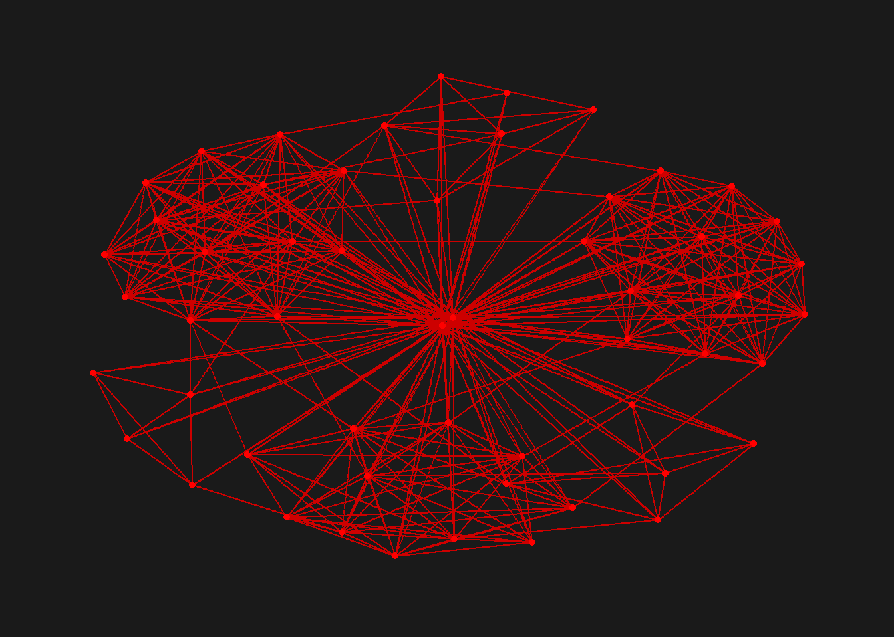
Working with ggraph’s layouts
ggraph supports many layouts for standardised use, they are: star, circle, nicely (default), dh, gem, graphopt, grid, mds, spahere, randomly, fr, kk, drl and lgl. The figures below show layouts supported by ggraph().


Fruchterman and Reingold layout
We plot a network graph using a Fruchterman and Reingold layout, which is a graph layout algorithm which positions nodes in a way that minimizes edge crossings and distributes them evenly in space.
g <- ggraph(GAStech_graph,
layout = "fr") +
geom_edge_link() +
geom_node_point()
g + theme_graph()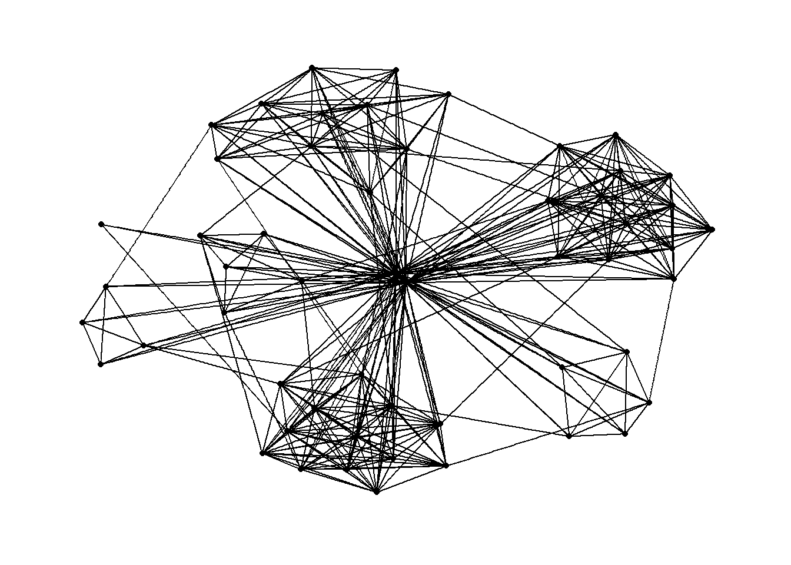
Things to learn from the code chunk above
layoutargument is used to define the layout used.
Modifying network nodes
Here, we will colour each node by referring to their respective departments.
g <- ggraph(GAStech_graph,
layout = "nicely") +
geom_edge_link(aes()) +
geom_node_point(aes(colour = Department,
size = 2))
g + theme_graph()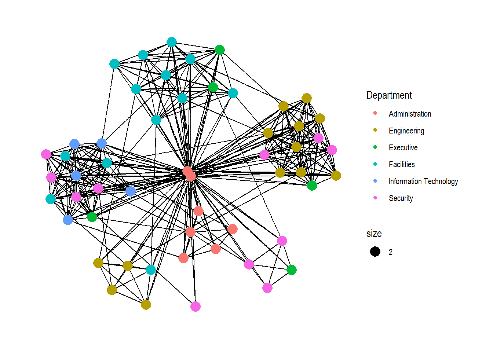
Things to learn from the code chunk above
geom_node_pointis equivalent in functionality togeo_pointof ggplot2. It allows for simple plotting of nodes in different shapes, colours and sizes. In the codes chunks above colour and size are used.
Modifying network edges
Here, the thickness of the edges will be mapped with the Weight variable.
g <- ggraph(GAStech_graph,
layout = "nicely") +
geom_edge_link(aes(width=Weight),
alpha=0.2) +
scale_edge_width(range = c(0.1, 5)) +
geom_node_point(aes(colour = Department),
size = 2)
g + theme_graph()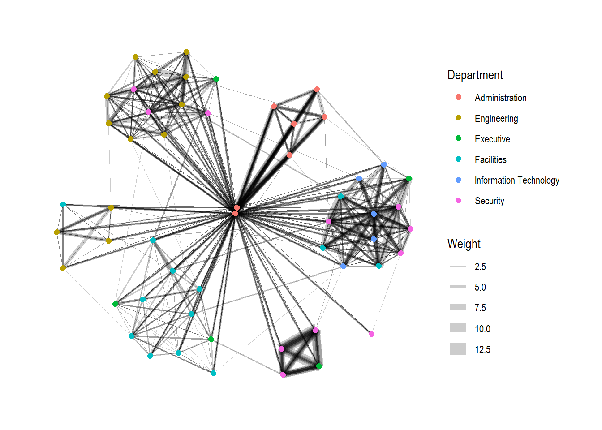
Things to learn from the code chunk above
geom_edge_linkdraws edges in the simplest way - as straight lines between the start and end nodes, but it can do more that that. In the example above, argumentwidthis used to map the width of the line in proportional to the Weight variable and argumentalphais used to introduce opacity on the line.
Creating facet graphs
Another very useful feature of ggraph is faceting. In visualising network data, this technique can be used to reduce edge over-plotting in a meaningful way by spreading nodes and edges out based on their attributes.
There are three functions in ggraph to implement faceting:
facet_nodes()whereby edges are only drawn in a panel if both terminal nodes are present here,facet_edges()whereby nodes are always drawn in al panels even if the node data contains an attribute named the same as the one used for the edge facetting, andfacet_graph()which does faceting on the above two variables simultaneously.
Working with facet_edges()
Here, we use facet_edges()
set_graph_style()
g <- ggraph(GAStech_graph,
layout = "nicely") +
geom_edge_link(aes(width=Weight),
alpha=0.2) +
scale_edge_width(range = c(0.1, 5)) +
geom_node_point(aes(colour = Department),
size = 2)
g + facet_edges(~Weekday)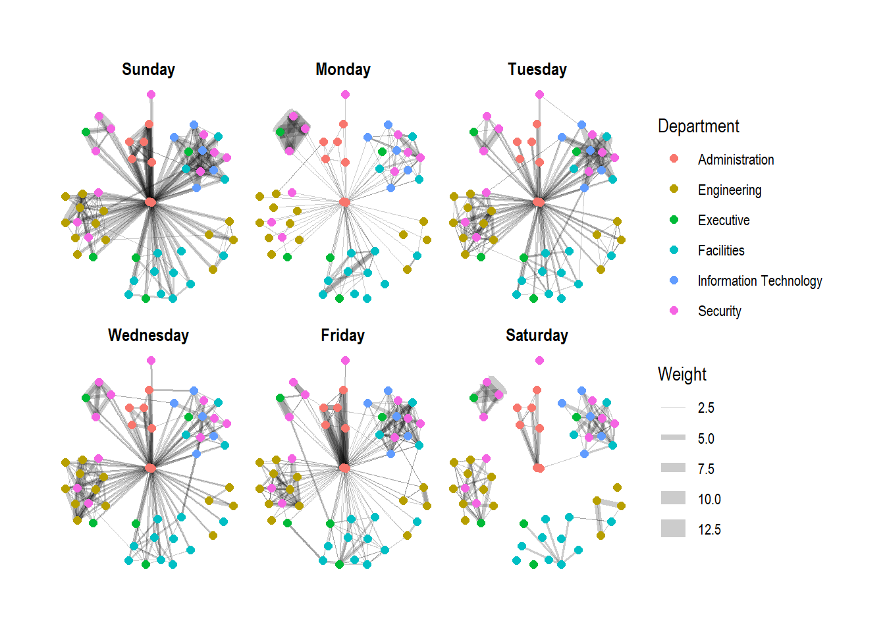
Working with theme()
Here, we change the position of the legend
set_graph_style()
g <- ggraph(GAStech_graph,
layout = "nicely") +
geom_edge_link(aes(width=Weight),
alpha=0.2) +
scale_edge_width(range = c(0.1, 5)) +
geom_node_point(aes(colour = Department),
size = 2) +
theme(legend.position = 'bottom')
g + facet_edges(~Weekday)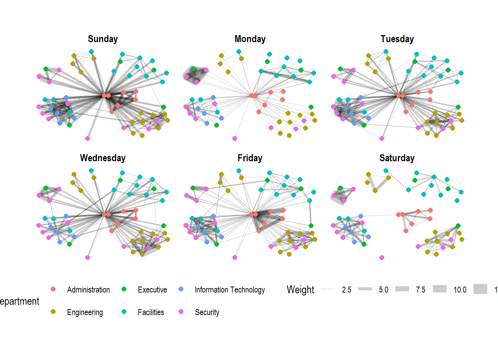
Adding a frame
We add a frame to each individual graph
set_graph_style()
g <- ggraph(GAStech_graph,
layout = "nicely") +
geom_edge_link(aes(width=Weight),
alpha=0.2) +
scale_edge_width(range = c(0.1, 5)) +
geom_node_point(aes(colour = Department),
size = 2)
g + facet_edges(~Weekday) +
th_foreground(foreground = "grey80",
border = TRUE) +
theme(legend.position = 'bottom')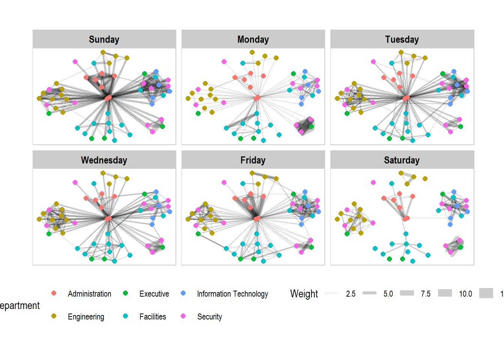
Working with facet_nodes()
Here, we use facet_nodes(), but with all the above positioning and frame at one go.
set_graph_style()
g <- ggraph(GAStech_graph,
layout = "nicely") +
geom_edge_link(aes(width=Weight),
alpha=0.2) +
scale_edge_width(range = c(0.1, 5)) +
geom_node_point(aes(colour = Department),
size = 2)
g + facet_nodes(~Department)+
th_foreground(foreground = "grey80",
border = TRUE) +
theme(legend.position = 'bottom')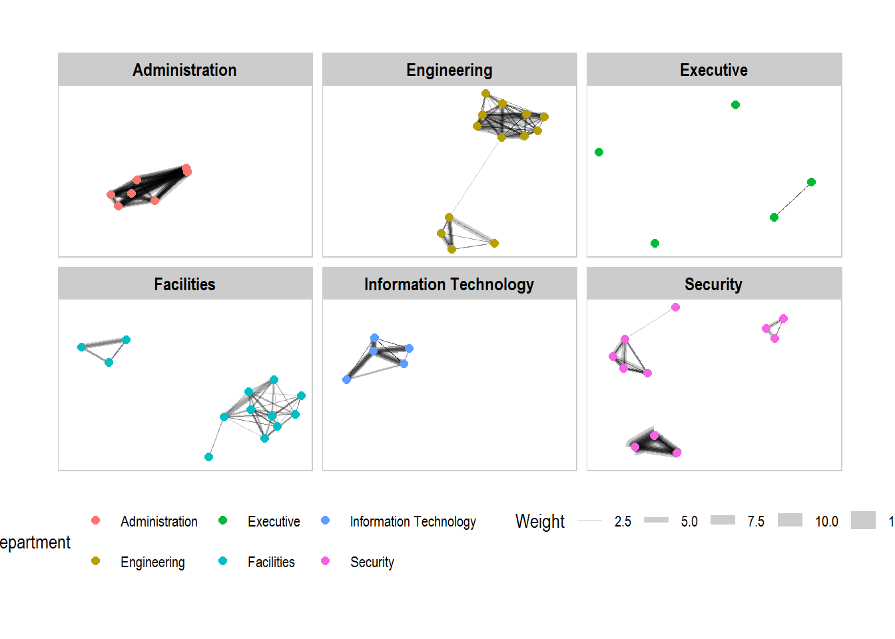
Network Metrics Analysis
Computing centrality indices
Centrality measures are a collection of statistical indices use to describe the relative important of the actors are to a network.
There are four well-known centrality measures: degree, betweenness, closeness and eigenvector. It is beyond the scope of this hands-on exercise to cover the principles and mathematics of these measure here. Chapter 7: Actor Prominence of A User’s Guide to Network Analysis in R provides an understanding of theses network measures.
g <- GAStech_graph %>%
mutate(betweenness_centrality = centrality_betweenness()) %>%
ggraph(layout = "fr") +
geom_edge_link(aes(width=Weight),
alpha=0.2) +
scale_edge_width(range = c(0.1, 5)) +
geom_node_point(aes(colour = Department,
size=betweenness_centrality))
g + theme_graph()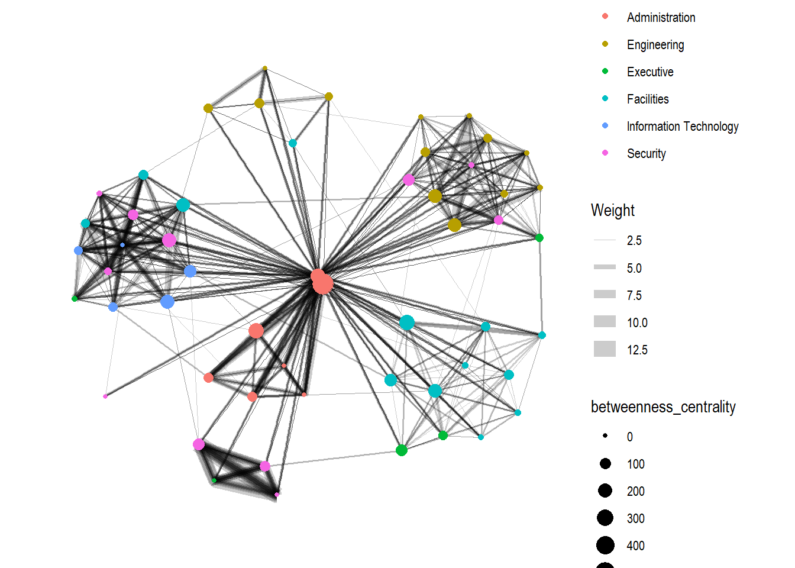
Things to learn from the code chunk above
mutate()of dplyr is used to perform the computation. the algorithm used is thecentrality_betweenness()of tidygraph.
Visualising network metrics
It is important to note that from ggraph v2.0 onwards, algorithms such as centrality measures can be accessed directly in ggraph calls. This means that it is no longer necessary to precompute and store derived node and edge centrality measures on the graph in order to use them in a plot.
g <- GAStech_graph %>%
ggraph(layout = "fr") +
geom_edge_link(aes(width=Weight),
alpha=0.2) +
scale_edge_width(range = c(0.1, 5)) +
geom_node_point(aes(colour = Department,
size = centrality_betweenness()))
g + theme_graph()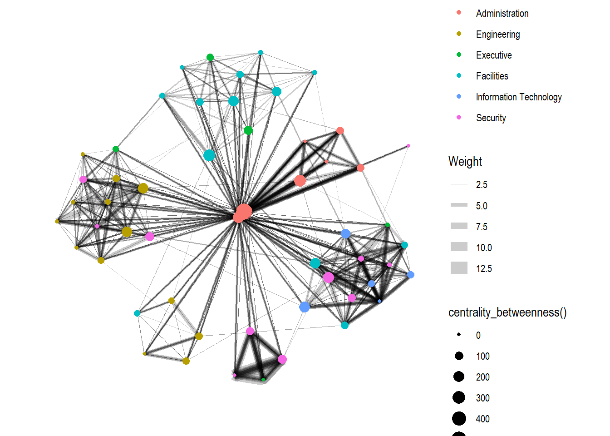
Visualising Community
tidygraph package inherits many of the community detection algorithms embedded into igraph and makes them available to us, including Edge-betweenness (group_edge_betweenness), Leading eigenvector (group_leading_eigen), Fast-greedy (group_fast_greedy), Louvain (group_louvain), Walktrap (group_walktrap), Label propagation (group_label_prop), InfoMAP (group_infomap), Spinglass (group_spinglass), and Optimal (group_optimal). Some community algorithms are designed to take into account direction or weight, while others ignore it.
Here, we will use group_edge_betweenness().
g <- GAStech_graph %>%
mutate(community = as.factor(group_edge_betweenness(weights = Weight, directed = TRUE))) %>%
ggraph(layout = "fr") +
geom_edge_link(aes(width=Weight),
alpha=0.2) +
scale_edge_width(range = c(0.1, 5)) +
geom_node_point(aes(colour = community))
g + theme_graph()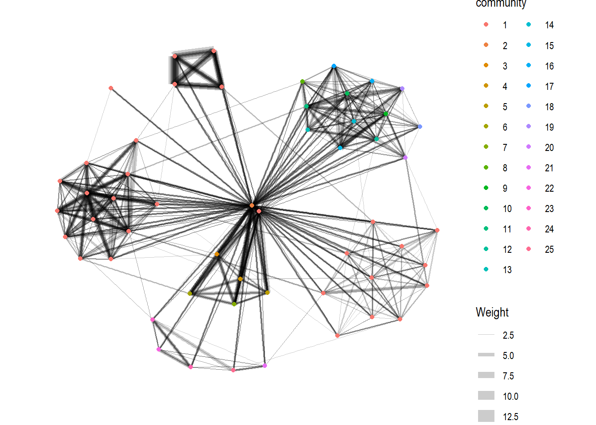
For better visualisation, we make use of ggforce package, which provides missing functionality to ggplot2, specifically its geom_mark_hull(), which draws a convex hull around groups of points to emphasize the cluster.
g <- GAStech_graph %>%
activate(nodes) %>%
mutate(community = as.factor(
group_optimal(weights = Weight)),
betweenness_measure = centrality_betweenness()) %>%
ggraph(layout = "fr") +
geom_mark_hull(
aes(x, y,
group = community,
fill = community),
alpha = 0.2,
expand = unit(0.3, "cm"), # Expand
radius = unit(0.3, "cm") # Smoothness
) +
geom_edge_link(aes(width=Weight),
alpha=0.2) +
scale_edge_width(range = c(0.1, 5)) +
geom_node_point(aes(fill = Department,
size = betweenness_measure),
color = "black",
shape = 21)
g + theme_graph()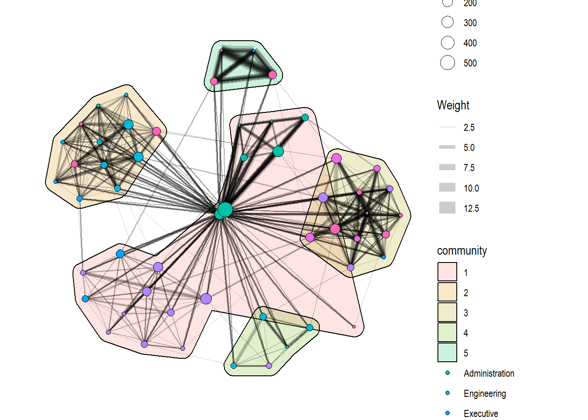
Building Interactive Network Graph with visNetwork
visNetwork is a R package for network visualization, using the vis.js javascript library.
The visNetwork() function uses a nodes list and edges list to create an interactive graph.
- The nodes list must include an “id” column, and the edge list must have “from” and “to” columns.
- The function also plots the labels for the nodes, using the names of the actors from the “label” column in the node list.
With the resulting graph, we can move the nodes and the graph will use an algorithm to keep the nodes properly spaced. At the same time, we can also zoom in and out on the plot, and move it around to re-center it.
Data Preparation for visNetwork
Before we can plot the interactive network graph, we need to prepare the data model.
GAStech_edges_aggregated <- GAStech_edges %>%
left_join(GAStech_nodes, by = c("sourceLabel" = "label")) %>%
rename(from = id) %>%
left_join(GAStech_nodes, by = c("targetLabel" = "label")) %>%
rename(to = id) %>%
filter(MainSubject == "Work related") %>%
group_by(from, to) %>%
summarise(weight = n()) %>%
filter(from!=to) %>%
filter(weight > 1) %>%
ungroup()Plotting the first interactive network graph
USing the data prepared, we now plot the interactive network graph.
visNetwork(GAStech_nodes,
GAStech_edges_aggregated)This graph uses force-based physics to adjust the nodes’ positions. However, there are too many edges in the graph, leading to the nodes not stabilizing properly, as the graph keeps recalculating positions instead of settling.
Working with Layouts
The use of a precomputed layout will stop the wobbling. Here, we use a Fruchterman and Reingold layout.
visNetwork(GAStech_nodes,
GAStech_edges_aggregated) %>%
visIgraphLayout(layout = "layout_with_fr") Working with visual attributes - Nodes
visNetwork() looks for a field called “group” in the nodes object to colour the nodes according to the values of the “group” field.
We first rename the “Department” field to “group”.
GAStech_nodes <- GAStech_nodes %>%
rename(group = Department) And run the code below to shades the nodes by assigning unique colour to each category in the “group” field.
visNetwork(GAStech_nodes,
GAStech_edges_aggregated) %>%
visIgraphLayout(layout = "layout_with_fr") %>%
visLegend() %>%
visLayout(randomSeed = 123)Working with visual attributes - Edges
We symbolise the edges using visEdges(). Here,
arrowsis used to define where to place the arrow.smoothis used to plot the edges using a smooth curve.
visNetwork(GAStech_nodes,
GAStech_edges_aggregated) %>%
visIgraphLayout(layout = "layout_with_fr") %>%
visEdges(arrows = "to",
smooth = list(enabled = TRUE,
type = "curvedCW")) %>%
visLegend() %>%
visLayout(randomSeed = 123)Interactivity
visOptions() is used to incorporate interactivity features in the data visualisation. Here,
highlightNearesthighlights nearest neighbours when clicking a node.nodesIdSelectioncreates an HTML select element by adding a dropdown menu.
visNetwork(GAStech_nodes,
GAStech_edges_aggregated) %>%
visIgraphLayout(layout = "layout_with_fr") %>%
visOptions(highlightNearest = TRUE,
nodesIdSelection = TRUE) %>%
visLegend() %>%
visLayout(randomSeed = 123)